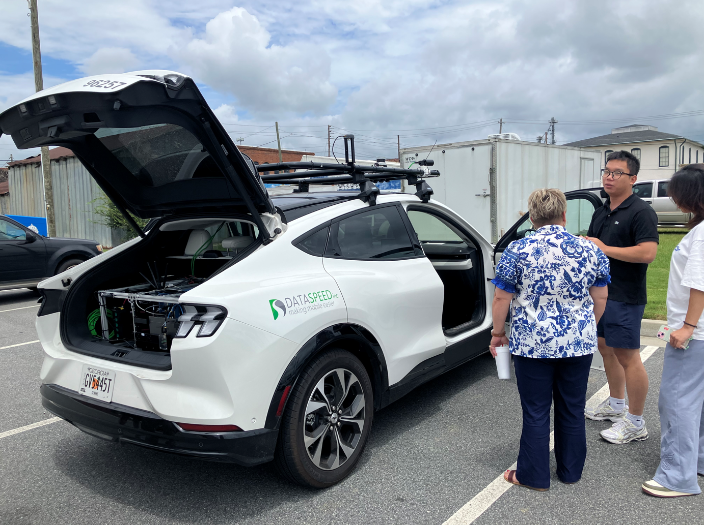
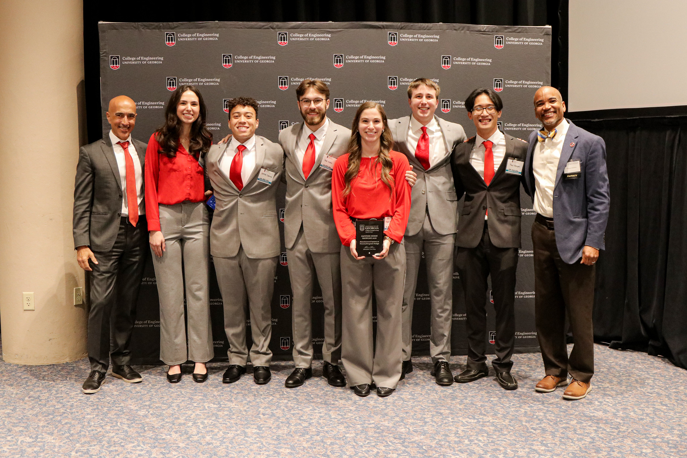
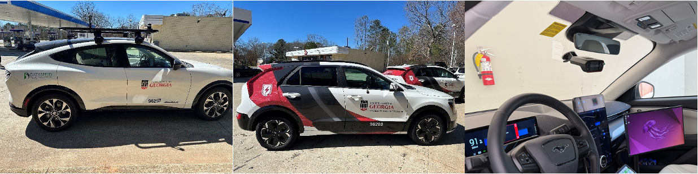

WACV 2027 Accepted
DriveDegrade
When Does Corruption Break the Plan? A Degradation-Tolerance Benchmark for Camera-Only End-to-End Driving.

University of Georgia · Mobility Lab
Connecting autonomous vehicles, intelligent infrastructure,
and the people who depend on them.
Our perspective
Mobility is more than a vehicle. It is a connected system.
At the University of Georgia, we study autonomous driving, robotics, and transportation infrastructure together. Our research connects perception, planning, and control with the demands of real roads and communities.
Meet the people behind the researchResearch directions
From learning-based autonomy
to connected transportation systems.
Research spotlight
Open research
Map & interactive demo
Inspect the rural route in 3D and see where road geometry, markings, and roadside conditions challenge automated driving.
Field experiment dataset
Compare one-pedal and two-pedal driving under manual control and adaptive cruise control, and examine how speed disturbances travel through a platoon.
Interactive evidence hub
Explore research findings, field pilots, and deployment implications through a searchable evidence map and linked stakeholder recommendations.
Beyond the algorithm
Our instrumented vehicles support rural-road data collection and EV car-following experiments. Field observations connect infrastructure conditions with vehicle behavior.
Explore the Georgia case study
Inside Mobility Lab
Field visits, instrumented vehicles, and student collaboration.
A closer look at the work behind our research.

In the field · July 2026
During a TRAVELS visit to Pulaski County, Georgia, the UGA team discussed demonstration routes and collected data for HD-map development.
Explore the fieldwork & maps Photo: TRAVELS Center
Student collaboration · 2026
The Mobility Lab-supported capstone team received the Manufactured System or Process Design Award for its autonomous vehicle infrastructure evaluation tool.
Meet the award-winning project Photo: UGA College of Engineering
UGA research vehicles and instrumentation
for EV car-following experiments.
From the lab
DriveDegrade and FALCON have been accepted at the IEEE/CVF Winter Conference on Applications of Computer Vision (WACV 2027).
DriveDegrade paper FALCON codeOur rural AV route viewer brings together a Lanelet2 HD map and LiDAR point cloud from Hawkinsville, Georgia. The public map-data release supports interactive exploration of the route and its infrastructure challenges.
Map data release Route viewerHandong Yao's UGA team met with local officials in Pulaski County to discuss a demonstration route connecting residential areas with the regional hospital. The visit also included data collection for high-definition mapping.
TRAVELS field-visit report Georgia route planning